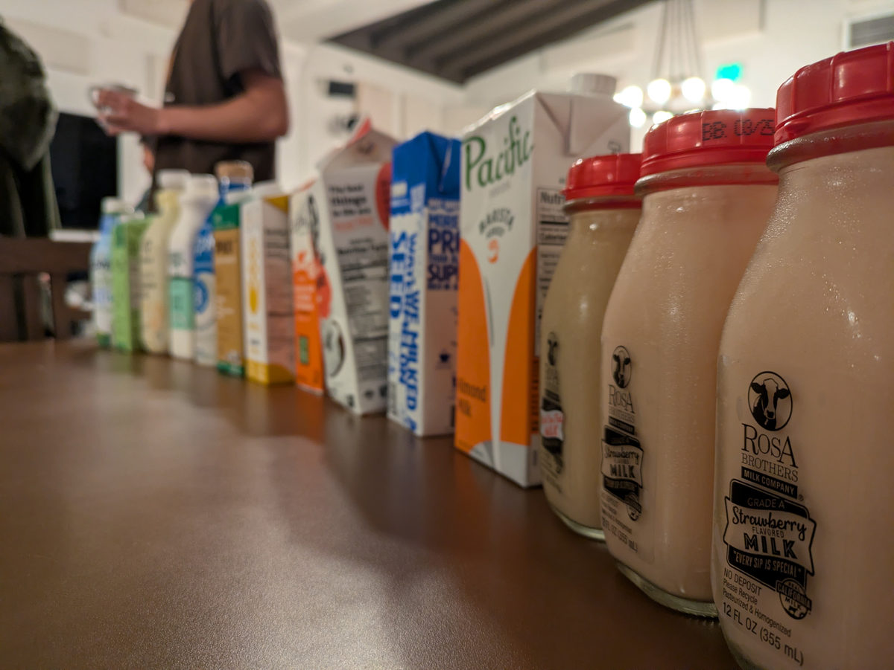
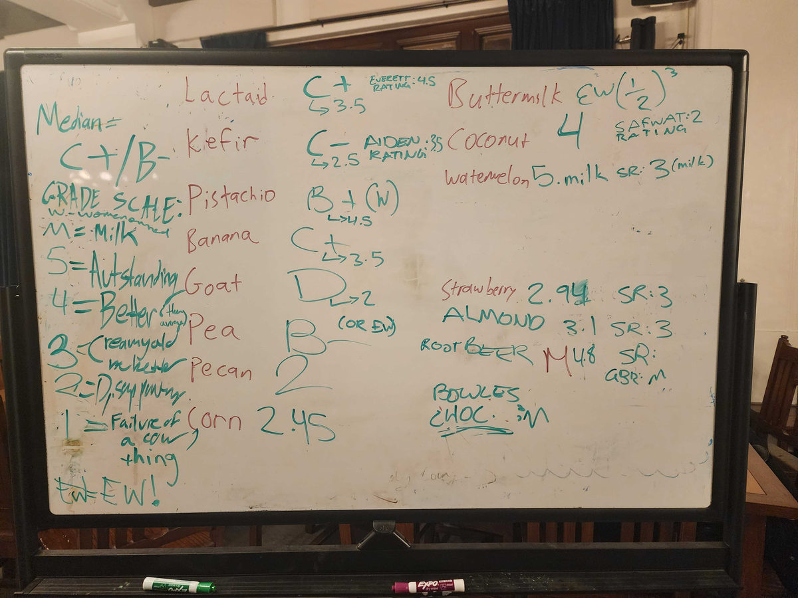

Milk Tasting
Bowles Hall has a strange relationship with milk. There are the milk haters, who have sworn off drinking milk as a childish habit. There are also the lactose-intolerants, who are stuck drinking plant-based options. And then there are the milk lovers, who seize every opportunity to get their daily dose of lactose in and post their best dairy-related pictures in our #milkpics Slack channel.
Dylan and I recently hosted our 2nd annual milk tasting event for the milk lovers in Bowles. The day before, we went to Berkeley Bowl, which has an incredible selection of animal and plant-based milks. With a $100 budget, we had to be deliberate about choosing the most exciting collection of milks. In the end, we had 15 cartons and bottles piled high in our cart, to the surprise of our cashier. “It's for milk tasting,” we explained with a straight face. While some milks were lost in transport (RIP Strauss), the final line-up was extraordinary.


One by one, we opened each milk and poured a “shot” into everyone's cups. Some milks instantly garnered a reaction just from the smell (goat milk…). Others like root beer milk, people were more excited to try. For each milk, we hit a cheers and drank together. Then, the discourse. Everyone talking to their neighbors about the flavors and the textures of the milk. Intense arguments ensued: no way that pecan milk was better than the banana milk! Why did the pea milk taste so mealy?
And finally, the vote. Aiden and Benji moderated the voting process. After we finished drinking each milk, everyone would simultaneously shout their rating on a scale of 1–5. We quickly realized we needed to introduce two special categories: “Eww” for worse than 1, and “Moo” for better than 5. It was pure chaos.
And the winners were:
- Bowles chocolate milk (Moo)
- Watermelon seed milk (5)
- Root beer milk (4.8)
I can't wait to see what milks are chosen next year!